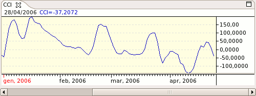

The Commodity Channel Index measures the position of price in relation to its moving average. This can be used to highlight when the market is overbought/oversold or to signal when a trend is weakening. The indicator is similar in concept to Bollinger Bands but is presented as an indicator line rather than as overbought/oversold levels.

Parameters